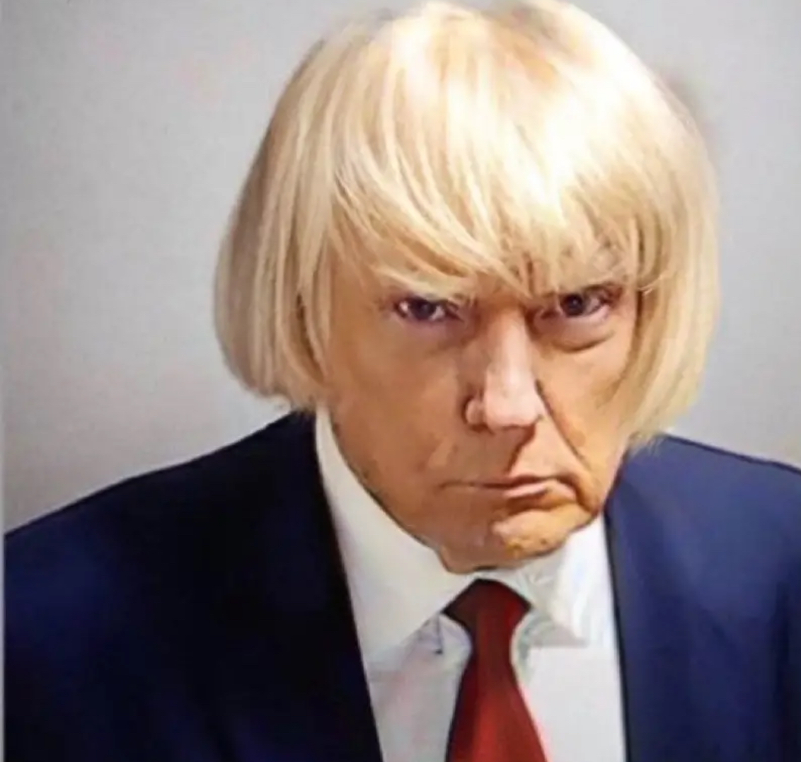

In the dimly lit Oval Office, President Johnathan Harkness sat alone at his desk, the weight of the nation resting heavily on his shoulders. It was a frigid, stormy night, and the thunder rumbled ominously in the distance, setting an eerie backdrop to the events that would unfold.
President Harkness was known for his charismatic smile and charming speeches, but behind those presidential façades lurked a darkness that only a few had glimpsed. As he stared out the window, the rain lashed against the glass, casting distorted shadows on the walls. The room was filled with portraits of past presidents, their eyes seemingly following him with every move.
His term had been marked by secrecy and deception. Rumors swirled about his clandestine meetings with shadowy figures, and whispers of his involvement in covert operations grew louder with each passing day. It was said that he had made a pact with an enigmatic organization, a deal that promised him power beyond imagination, but at a sinister cost.
Tonight was different. As he worked late into the night, his desk phone rang, breaking the eerie silence. His heart skipped a beat as he answered the call. A deep, gravelly voice spoke on the other end, filled with an unsettling authority. "Mr. Harkness, the time has come to fulfill your end of the bargain."
The president's voice trembled as he responded, "What do you want from me? I've done everything you've asked."
The voice on the other end hissed, "It's time for the final act. You must initiate Operation Midnight Reckoning. The world must witness your true power."
President Harkness knew what that meant. Operation Midnight Reckoning was a plan that would plunge the nation into chaos and darkness. He had been groomed to carry out this horrifying task, a way to ensure his continued ascent to power.
As he put down the phone, he felt an overwhelming dread wash over him. He glanced at the portraits of past presidents, their stern expressions now seemed accusatory, as if they knew the horrors he was about to unleash upon the world.
The storm outside intensified, unleashing torrents of rain and flashes of lightning. With trembling hands, he accessed the red button hidden beneath his desk, the one that held the power to unleash the unthinkable. The world watched in terror as news reports flashed across screens, announcing the commencement of Operation Midnight Reckoning.
The country descended into chaos, panic, and darkness as the president's sinister plan unfolded. It was a nightmarish scene, with riots, fires, and the unleashing of horrors that no one had ever imagined. The nation's people, once trusting and hopeful, were now gripped by fear, realizing the true nature of their leader.
As dawn broke, the devastation was complete. President Harkness had sealed his legacy as the most terrifying and malevolent leader in the nation's history. His term would forever be remembered as a time of darkness and horror, a chilling reminder that even the most powerful leaders could be consumed by their lust for power and the sinister forces that lurked in the shadows.
And in the darkest corners of the world, the enigmatic organization that had backed him watched with satisfaction, knowing that they had created a legacy of fear that would haunt the nation for generations to come. horse
Fnaf